항공기관정비기능사 (2002-01-27 기출문제)
1과목: 비행원리
1. 그림과 같은 항공기의 날개의 형태는?
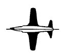
- 오지형
- 테이퍼형
- 뒤젖힘형
- 삼각형
(정답률: 88%)

2. 날개시위의 길이가 2m, 공기흐름의 속도가 720㎞/h, 공기의 동점성계수가 0.2㎝2/sec일 때 레이놀즈수를 구하면?
- 2 x 106
- 2 x 107
- 4 x 106
- 4 x 107
(정답률: 79%)
3. 비행기 날개에서 영양력 받음각(zero lift angle of attack)이란 무엇인가? (단, CD : 항력계수, CL : 양력계수이다.)
- CD = 0 일 때의 받음각
- CL = 0 일 때의 받음각
- CD = 0 이고 CL ≠ 0 일 때의 받음각
- CD ≠ 0 이고 CL ≠ 0 일 때의 받음각
(정답률: 84%)
4. 속도 50m/sec로 비행하는 비행기의 항력이 1000kgf이라면 이때 비행기의 필요마력(Hp)은?
- 529
- 667
- 720
- 854
(정답률: 50%)
5. 직렬식 회전날개 헬리콥터의 특징으로 잘못된 것은?
- 세로안정이 좋다.
- 무거운 물체운반에 적당하다.
- 가로안정성이 좋다.
- 앞에서 본 단면적이 작다.
(정답률: 55%)
6. 대기권에서 전리층이 존재하는 곳은?
- 중간권
- 열권
- 극외권
- 성층권
(정답률: 72%)
7. 가로진동과 방향진동이 결합된 것으로 대개 동적으로는 안정하지만 진동하는 성질 때문에 문제가 되는 현상은?
- 방향 불안정
- 나선 불안정
- 가로방향 불안정
- 세로 불안정
(정답률: 72%)
8. 회전날개의 축에 토크가 작용하지 않는 상태에서도 일정한 회전수를 유지하게 되는 것은?
- 정지비행(hovering)
- 지면효과(ground effect)
- 조파항력(wave drag)
- 자동회전(auto rotation)
(정답률: 80%)
9. 정비기술 도서의 종류에 속하지 않는 것은?
- 정비 기술정보
- 작동 기술정보
- 정비지원 기술정보
- 부품 기술정보
(정답률: 32%)
10. 종극하중(ultimate load)을 구하는 식으로 맞는 것은?
- 종극하중 = 제한하중 × 안전계수
- 종극하중 = 제한하중 적 안전계수
- 종극하중 = 제한하중 - 안전계수
- 종극하중 = 제한하중 + 안전계수
(정답률: 73%)
11. 다음 초음속 흐름의 특성에 관한 설명중 맞는 것은?
- 공기 흐름의 통로가 좁아지면 속도는 증가하고, 압력은 감소한다.
- 공기 흐름의 통로가 좁아지면 속도와 압력이 다 같이 증가한다.
- 공기 흐름의 통로가 좁아지면 속도는 감소되고, 압력은 증가된다.
- 공기 흐름의 통로가 좁아지면 속도와 압력이 다 같이 감소한다.
(정답률: 73%)
12. 날개 끝 실속을 방지하기 위해 날개끝의 붙임각을 날개 뿌리의 붙임각보다 작게하는 경우가 있다. 이것을 무엇이라 하는가?
- 공기역학적 비틀림
- 쳐든각
- 기계적 비틀림
- 기하학적 비틀림
(정답률: 74%)
13. 경사충격파를 지난 공기의 흐름속도는 어떻게 되는가?
- 아음속으로 감소한다.
- 증가한다.
- 감소하지만 초음속 흐름이다.
- 속도의 변화는 없다.
(정답률: 45%)
14. 다음 등식이 성립되는 것은?
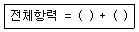
- 유해항력. 마찰항력
- 유해항력. 유도항력
- 유도항력. 마찰항력
- 마찰항력. 점성항력
(정답률: 61%)
15. 동적 세로 안정의 운동의 종류를 열거한 것이다. 해당 되지않는 것은?
- 장주기 운동
- 나선 운동
- 단주기 운동
- 승강키 자유운동
(정답률: 62%)
16. 고속기에서 나타나는 가로 불안정(lateral instability) 현상은?
- 턱 언더(tuck under)
- 피치 업(pitch up)
- 디프 실속(deep stall)
- 날개 드롭(wing drop)
(정답률: 66%)
17. 자력선이 가장 쉽게 통과하는 것은?
- 구리
- 철
- 알루미늄
- 티타늄
(정답률: 59%)
18. 계통이나 구성품의 고장을 상태에 따라 분석하여 그 원인을 제거하기 위한 적절한 조치를 취함으로써 항공기의 감항성을 유지되도록 하는 정비 방식은?
- 시한성 정비
- 상태정비
- 폐품 정비
- 신뢰성 정비
(정답률: 59%)
19. 항공기에 장착된 상태로 계통 및 구성품이 규정된 지시대로 정상기능을 발휘하고 허용한계값 내에 있는가를 점검하는 것은?
- 트림 점검(TRIM CHECK)
- 기능 점검(FUNCTION CHECK)
- 벤치 체크(BENCH CHECK)
- 오버홀(OVERHAUL)
(정답률: 65%)
20. 외측 마이크로미터의 각부 기능을 설명한 것으로 가장 올바른 것은?
- 앤빌과 스핀들은 마이크로미터를 보관할 때 0점 조정을 위해 사용
- 클램프와 슬리브 사이에는 측정물을 끼워 넣을 수 있도록 되어있다.
- 래치스톱은 측정력 이상의 힘이 작용되면 공회전 하도록 되어있다.
- 래치노브는 심블의 안쪽둘레에 설치되어 있다.
(정답률: 48%)
2과목: 항공기정비
21. 공업상 측정,기계기구의 점검,그밖에 길이의 기준용으로 사용되고 있는 측정원기 중에 하나인 측정기의 명칭은?
- 버니어캘리퍼스
- 마이크로미터
- 다이얼게이지
- 블럭게이지
(정답률: 39%)
22. 전기측정에 대한 설명 중 가장 올바른 것은?
- 전류계는 반드시 병렬로 연결해야 한다.
- 전압측정은 작은 범위에서 시작해서 큰 범위로 높여 가면서 측정한다.
- 저항계는 0점 조절이 필요없다.
- 저항이 큰 회로에 전압계를 사용할 때는 저항이 큰 전압계를 사용해야 한다.
(정답률: 43%)
23. 형광침투 검사에서 현상제를 사용하는 주 목적은?
- 침투제의 침투능력을 향상시키기 위해
- 유화제의 잔량을 흡수하기 위해
- 결함속에 침투된 침투제를 빨아내어 결함을 나타내기 위해
- 표면을 건조시키기 위해
(정답률: 66%)
24. 귀보호 장구의 설명 내용으로 가장 올바른 것은?
- 1종 귀보호 장구는 고음에서만 차음되는 귀마개
- 2종 귀보호 장구는 저음에서 차음되는 귀마개
- 1종 귀보호 장구는 고음· 저음에서 모두 차음되는 귀마개
- 2종 귀보호 장구는 고음· 저음에서 모두 차음되는 귀마개
(정답률: 50%)
25. 방사선 투과검사(X-Ray)에 대한 설명 내용으로 가장 올바른 것은?
- 비금속재료의 결함은 검출하지 못한다.
- 검사재료 두께에 관계없이 일정량의 방사선 노출이 요구된다.
- 방사선의 침투력은 파장이 클 수록 크다.
- 방사선 투과검사는 표면결함을 검출할 수 있다.
(정답률: 40%)
26. 재해의 원인중에서 생리적인 원인은 어떤 것인가?
- 작업자의 피로
- 안전장치의 불안전
- 작업자의 무지
- 작업복의 부적당
(정답률: 68%)
27. 다음은 항공기 견인시의 안전사항들 이다. 가장 관계가 먼 것은?
- 야간에 견인할 때는 전방등 및 항법등 외에도 필요한 조명장치를 해야한다.
- 견인차에는 견인책임자가 탑승하여 견인작업을 해야한다.
- 지상감시자는 항공기 날개의 양 끝부분에 위치하여 견인상태를 감시한다.
- 견인에 앞서 견인할 부근에 장애물이 없는가를 확인한다.
(정답률: 68%)
28. 전기적인 화재는 어느 것인가?
- A급 화재
- B급 화재
- C급 화재
- D급 화재
(정답률: 89%)
29. 작동유(Hydraulic fluid)가 항공기 타이어(Aircraft tire)에 흘러있어서 이것을 제거하려한다. 어느것을 사용해서 세척하여야 하는가?
- 알콜
- 솔벤트
- 휘발유
- 비눗물과 더운물
(정답률: 73%)
30. 다음 영문의 내용으로 가장 올바른 것은?
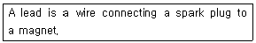
- 점화 플러그는 마그네토에 포함된다.
- 도선은 점화 플러그와 마그네토를 연결하는 선이다.
- 마그네토는 점화 플러그에 의해 작동된다.
- 처음 작동의 연결은 축전지와 마그네토 플러그에 연결된 도선에 의한다.
(정답률: 83%)
31. 리벳의 작업 내용중 적합하지 않은 것은?
- 리벳의 지름은 접합할 판재 중에서 두꺼운 판재의 2배가 적당하다.
- 리벳 머리를 성형하기 위해 리벳이 판재위로 돌출되는 길이는 리벳 지름의 1.5배이다.
- 성형된 리벳 머리의 지름이 리벳 지름의 1.5배가 되어야한다.
- 성형된 리벳 머리의 두께는 리벳 지름의 0.5배가 되어야한다.
(정답률: 67%)
32. 다음 문장이 뜻하는 것으로 가장 올바른 것은?
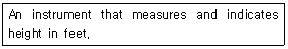
- Air speed indicator
- Altimeter
- vertical velocity indicator
- turn and slip indicator
(정답률: 69%)
33. 토크 렌치에 사용자가 원하는 토크값을 미리 지정(setting)시킨 후 볼트를 죄면 정해진 토크 값에서 소리가 나는 토크 렌치의 종류는?
- 디플렉팅- 빔형(deflecting-beam type) 토크렌치
- 오디블 인디케이팅형(audible indicating type) 토크 렌치
- 리지드 프레임형(rigid frame type) 토크 렌치
- 토션 바형(torsion bar type) 토크 렌치
(정답률: 84%)
34. 기체 판금 작업시 두께가 0.2cm인 판재를 굽힘 반지름 40cm로하여 60° 로 굽힐 때 굽힘여유(B.A)는 얼마인가? ( 단, π 는 3으로 계산한다 )
- 35.72cm
- 31.29cm
- 40.1cm
- 20.1cm
(정답률: 44%)
35. 항공기 관(Tube)의 연결 계통에서 잦은 분리가 필요한 부분에 사용되는 연결 방식은?
- 플레어(flare)관 접합 방식
- 플레어리스(flareless) 접합기구 방식
- 비드(bead)에 의한 연결 방식
- 스웨이징(swaging)접합 기구 방식
(정답률: 46%)
36. 가스터빈 기관을 압축기의 형식에 따라 구분할 때 고성능 가스터빈 기관에 가장 많이 사용되는 것은?
- 축류식
- 원심식
- 축류-원심식
- 겹흡입식
(정답률: 42%)
37. 연료탱크(fuel tank)속에 있는 서지박스(surge box)의 주목적은?
- 연료가 채워질 동안 탱크에 정압이 일어나는 것을 방지 한다.
- 비행중 탱크에 부압(negative pressure)이 걸리는 것을 방지한다.
- 연료부족시 비상연료로 사용하기 위하여
- 항공기의 자세에 관계없이 엔진에 연료의 공급을 확실히 유지하기 위하여
(정답률: 31%)
38. 프로펠러의 익단 실속은 성능에 큰 영향을 미치므로 이 현상을 방지하기 위한 방법으로 가장 관계가 먼 것은?
- 프로펠러 직경을 작게 한다.
- 프로펠러의 회전수를 증가시킨다.
- 익단 속도를 음속의 90% 이하로 제한 한다.
- 유성기어열의 감속기어를 설치한다.
(정답률: 53%)
39. 어떤 왕복기관의 출력을 동력계로 측정하였더니 1⑤㎰였다. 이때 대기압력 750㎜Hg,건구온도 25℃,습구온도 20℃(이때 수증기 압력 15㎜Hg)라 하면 표준대기에서의 마력은 얼마인가?
- 110.4㎰
- 115.4㎰
- 120.4㎰
- 125.4㎰
(정답률: 30%)
40. 피스톤 링(Piston Ring)의 끝간격(End clearance)을 갖는 가장 큰 이유는?
- 엔진 작동중 열팽창을 허용하기 위하여
- 장착이 용이 하도록
- 실린더 벽에 압력을 계속적으로 유지 하도록
- 윤활유 조절작용을 위하여
(정답률: 46%)
3과목: 항공기관
41. 항공기의 왕복기관 연료계통 구성품 중에서 기관을 시동할 때 실린더 안에 직접 연료를 분사시켜 농후한 혼합 가스를 만들어 줌으로써 시동을 쉽게하는 장치는?
- 기화기
- 프라이머
- 연료펌프
- 연료여과기
(정답률: 64%)
42. 4행정기관의 스파크 플러그가 매분당 100번 점화된다면 크랭크 축의 회전속도는?
- 100 rpm
- 200 rpm
- 400 rpm
- 800 rpm
(정답률: 50%)
43. 실린더 배럴을 헤드에 접합하는 방법으로 가장 관계가 먼 것은?
- 나사접합(the threaded joint)
- 스터드-너트접합(stud and nut fit)
- 수축접합(shrink fit)
- 압력접합(pressure fit)
(정답률: 35%)
44. 가스터빈 기관에서 배기부분의 주 구성품에 해당 되지 않는 것은?
- 테일 파이프
- 배기 코운
- 배기 노즐
- 디퓨우져
(정답률: 58%)
45. 1차 연료와 2차 연료를 분류시키고 시동시 과열상태(Hot start)를 방지하도록 하는 장치는 무엇인가?
- FCU
- P&D valve
- Fuel nozzle
- Fuel heater
(정답률: 68%)
46. 추력 중량비가 ＂발생추력/엔진중량＂으로 표시될 경우, 이 엔진 중량에 대하여 올바른 것은?
- 엔진으로부터 연료 무게를 뺀 중량
- 엔진으로부터 오일 무게를 뺀 중량
- 엔진으로부터 작동유 무게를 뺀 중량
- 엔진으로부터 연료 무게, 오일 무게, 작동유 무게를 뺀 중량
(정답률: 47%)
47. 축류압축기의 실속(stall)방지 구조와 관계가 없는 것은?
- 다축식 구조
- 가변 고정자깃
- 블리드 밸브
- 벌집형 쉬라우드
(정답률: 51%)
48. 결핍 시동인 헝스타트(HUNG START)에 대한 내용으로 가장 옳은 것은?
- 시동시 EGT가 규정치 이상 상승한다.
- IDLE RPM 이상 증가하지 않는다.
- 배기가스의 온도가 계속 낮아진다.
- 오일 압력이 늦게 상승한다.
(정답률: 56%)
49. 항공기 연료에 사용되는 케로신(kerosene)에 대한 내용으로 가장 올바른 것은?
- 가솔린 보다 갤론당 BTU가 적다.
- 가솔린과 갤론당 BTU가 같다.
- 가솔린 보다 파운드당 BTU가 적다.
- 가솔린 보다 파운드당 BTU가 많다.
(정답률: 50%)
50. 추력에 영향을 미치는 요소 중 비행속도와의 관계에 대한 설명은?
- 비행속도가 증가하면 흡입구 압력감소, 공기밀도증가 추력감소
- 비행속도가 증가하면 흡입구 압력증가, 공기밀도증가 추력감소
- 비행속도가 증가하면 흡입구 압력감소, 공기밀도증가 추력증가
- 비행속도가 증가하면 흡입구 압력증가, 공기밀도증가 추력증가
(정답률: 38%)
51. 열기관의 열효율은 공급된 열량과 기관에서 발생된 참일과의 비로 정의 된다. 이것을 식으로 나타내면?
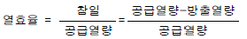
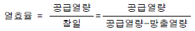
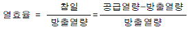
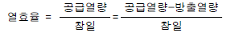
(정답률: 63%)
52. 프로펠러의 추진력을 추력(T)이라 하면 깃 단면은 비행기 날개의 날개골과 같으므로, 추력을 날개에서 얻어지는 공기의 힘이라 할 때, 관계식으로 맞는 것은?(단, D=프로펠러의 지름, n=회전속도, ρ =공기밀도)
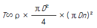
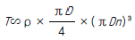
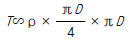
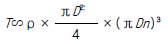
(정답률: 36%)
53. 가스터빈 기관의 용도를 적은 것이다. 서로 연결이 잘못된 것은?
- 터보제트 - 전투기
- 터보팬 - 수송기
- 터보프롭 - 고속기
- 터보샤프트 - 헬리콥터
(정답률: 67%)
54. 가스터빈 기관에 흡입된 공기는 압축기에서 압축, 연소실에서 가열, 터빈에서 팽창, 배기노즐에서 대기 중으로 방출되어, 다시 최초의 대기상태로 되돌아감으로써 온도, 압력 등 공기의 상태가 변하는 사이클을 이룬다. 이러한 사이클로 가장 올바른 것은?
- 오토 사이클
- 브레이톤 사이클
- 카르노 사이클
- 뉴톤 사이클
(정답률: 69%)
55. 속도 900Km/h로 비행하는 항공기에 장착된 터보제트 기관이 30Kg/s 질량 유량의 공기를 흡입하여 600m/s의 속도로 배기시킨다. 이 때의 총추력은 얼마인가?(단, 배기노즐의 출구압력은 대기압과 같다)
- 16000 (Kg· m/s2 · N)
- 17000 (Kg· m/s2 · N)
- 18000 (Kg· m/s2 · N)
- 19000 (Kg· m/s2 · N)
(정답률: 66%)
56. 실린더 안에 있는 연소가스가 피스톤에 작용하여 얻어진 동력을 무슨 마력이라 하는가?
- 제동 마력
- 축 마력
- 기계 마력
- 지시 마력
(정답률: 37%)
57. 항공용 왕복기관에서 기관작동 중 윤활유의 온도가 맞지 않는다면 무엇으로 조절해야 되는가?
- 윤활유 펌프에 있는 온도 조절 나사로 한다.
- 윤활유 탱크에 있는 온도 조절 나사로 한다.
- 윤활유 냉각기에 있는 온도 조절 밸브로 한다.
- 온도 조절 밸브에 있는 조절 나사로 한다.
(정답률: 30%)
58. 왕복 기관은 냉각 방법에 따라 공냉식과 액냉식이 있다. 공냉식 기관의 특징으로 가장 관계가 먼 것은?
- 지상 활주를 할 때를 제외하고 냉각 효율이 좋다.
- 제작비가 싸다.
- 구조가 복잡하다.
- 정비 하기가 쉽다.
(정답률: 53%)
59. 열을 일로 변환시키는 계수에 해당되는 것은?
- 일의 열당량
- 열팽창 계수
- 열의 일당량
- 에너지 변수
(정답률: 55%)
60. 가스터빈 기관의 연소실에서 직접연소에 이용되는 공기량은 연소실을 통과하는 공기의 몇 % 정도인가?
- 5 ∼ 10 %
- 10 ∼ 15 %
- 20 ∼ 30 %
- 35 ∼ 40 %
(정답률: 55%)